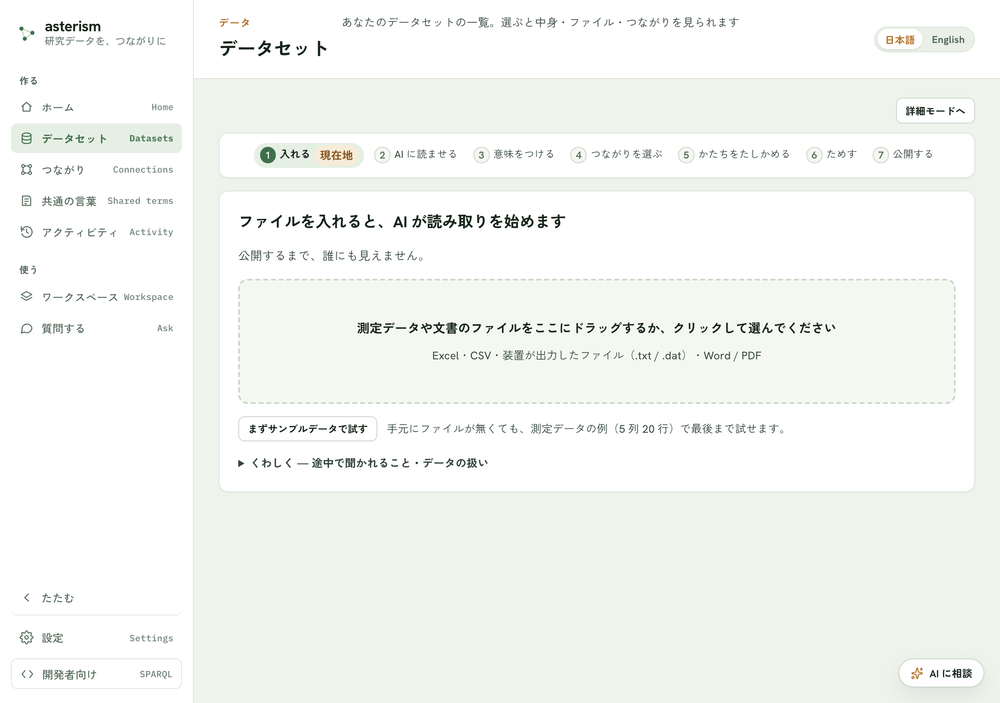
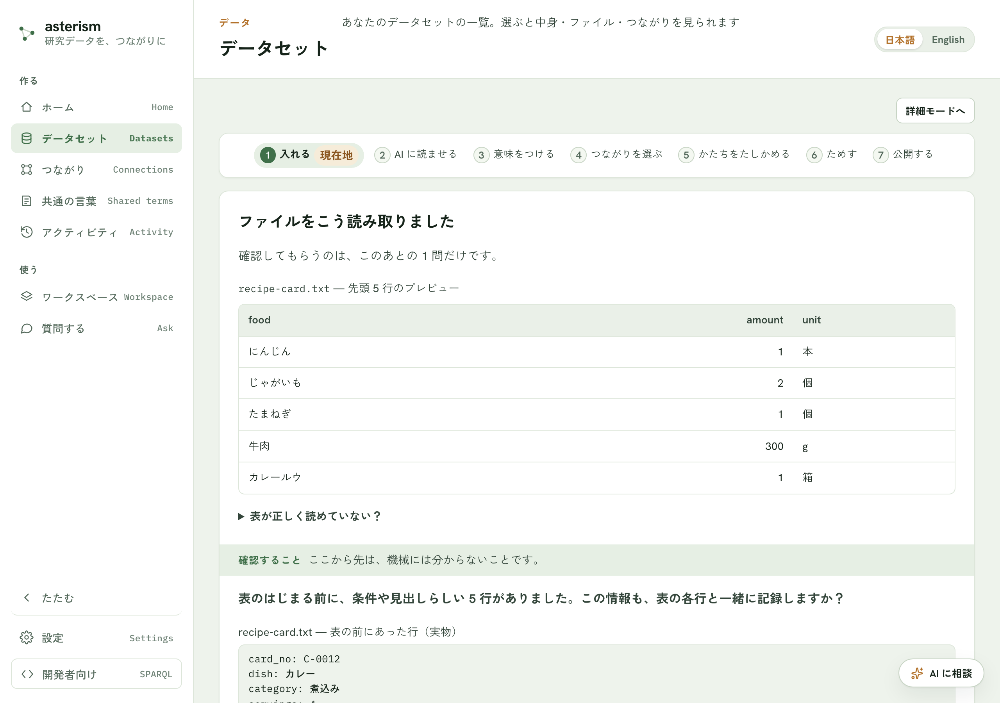

データの追加 — 対応ファイルと読み取りの確認
「入れる」ステップで置けるファイルの種類と、そのあとの「読み取りの確認」画面でできることをまとめます。手順そのものはgetting-started.md を参照してください。
対応しているファイル形式
- Excel・CSV・装置が出力したファイル（.txt / .dat）
- 文書 — 論文の XML（JATS）・Word・PDF。デスクトップ版で PDF を取り込むには、PDF を読み取る部品を 1 回入れます（下の「Word / PDF などの文書」）。画面は、いま取り込める形式だけを案内します
- JSON


種類のちがうファイルが混ざっているときは、表（Excel / CSV / 装置ファイル）・JSON・文書（Word / PDF / XML）を分けて置いてください。置いたら読み取りが始まりますが、公開するまで内容は誰にも見えません。
置いたファイルが、既にあるデータセットと同じ形だと機械が判断したときは、同じ形であることを知らせる帯が出ます。次のどちらかを選べます。
- 「そのまま追加」ボタン — 設計の確認を飛ばして、既にあるデータセットに足す
- 「設計を見直してから」ボタン — いつもどおり確認してから進む
サンプルデータで試す
手元にファイルが無いときは「まずサンプルデータで試す」ボタンで最後まで試せます。測定データの例（5 列 20 行）が用意され、あとでデータセットのページから消せます。
読み取りの確認でできること
ファイルを置くと、先頭 5 行のプレビューが表示され、正しく読み取れているか確かめられます。表がずれているときは「表が正しく読めていない？」を開くと、次の内容をその場で変えられ、プレビューが即座に描き直されます。
- 列の分けかた（カンマ／タブ／セミコロン／スペース）
- 表が始まる前の行数
- 文字化けの直しかた（Excel（日本語）／UTF-8）


AI からの質問に答える
読み取った内容を AI が確認し、あなたしか知らないことだけを聞いてきます。たとえば次のような質問です。
- 表の前にあった条件らしい行を、表の各行と一緒に記録するかどうか
- 複数のファイルをつなぐ共通の列はどれか
表の前にあった値に項目名が付いていないときは、名前を付ける欄が出ることもあります。分からなければ空欄のまま進め、あとから直せます。
Excel の複数シート v0.17.4 (2026-08-20) で追加
Excel ファイルに表が複数あるときは、使うものを選びます。グラフ用・メモ用のシートは外しておくと、このあとの確認が楽になります。
表の形をととのえる
AI の質問に答えて「この内容で進む」を押したとき、1 つのセルに複数の値が並んでいる列や、1 つのセルにリスト（著者の一覧など）が入っている列、値の種類そのものが列の値になっている列（たとえば「物性名」と「値」が別々の列に分かれた表）が見つかると、「表の形をととのえます」画面が表示されます。何も見つからなければこの画面は出ず、そのまま次に進みます。
見つかった形ごとに 1 つのタブが並びます。タブの左端には、まだ決めていないことがあるときは ⚠、確認が済んでいるときは ✓ が付きます。画面の上には「入力 ○○ 行 → 派生表 ○○ 行・捨てた要素 ○ 個・切った要素 ○ 個」という帯が常に表示され（画面をスクロールしても上に残ります）、判断表を変えるたびにこの数字も更新されます。計算し直している間は、帯の中とそのボタンにくるくるが出ます。
- 使う／使わない — 同じ種類の値の、綴りのゆれをまとめた表です。使う表にはチェックが入っています。外すと、その表は作られません（元の表にはそのまま残ります）。
- 同じ単位とみなす — 「別の単位で書かれた行」の欄に、同じ種類の値だけれど単位の書きかたが違う行の候補が出ることがあります。これは機械が「同じだ」と決めるのではなく、あなたが確かめて選ぶ判断です。押すと、その行も表に含まれるようになります。
- 別の表に合流 — よく似た表を 1 つにまとめたいときに使います。合流させた側の表は使われなくなります。この 2 つの操作は、表の右端の「操作」欄に縦に並びます。
- 表の列にする項目 — 入れ子になった値（たとえば
sample_info）から、1 行 1 件の表の列にしたい項目を選びます。項目名には「MaterialFamily 20%」のように、元の表のうちその項目に値が入っている行の割合が添えられます。はじめは割合が 25% 以上の項目にチェックが入り、残りは「ほかの項目 ○ 個を表示」を押すと開きます。分野が混ざったデータでは、分野に特有の項目は全体に対する割合が低くなるので、必要なものは自分で選べます。 - 表の列にする中身 — 項目の中身が複数ある（category・comment など）とき、どの中身を列にするかを選べます（1 つは必ず残ります）。選んだ中身の数だけ、項目ごとに列ができます。
- 列にする項目（リストの列） — 1 つのセルにリストが入っている列は、1 つの値を 1 行にした細長い表になります。リストの中身が項目を持つとき（著者のfamily・given など）は、どの項目を列にするかを選びます。外した項目は消えず、まとめて 1 つの列に残ります。全部外してもかまいません。
- 順番 — リストの並び順は、「何番目か」の列に残ります（著者の順番など）。リストとして読めなかったセルは、元の表にそのまま残り、画面に件数が出ます。
- 追加で持ち回る列 — 派生表にも残しておきたい、元の表の列を選べます。
準備ができたら、次のどちらかを選びます。
- ととのえて進む — 選んだ内容で表を作ってから、次の画面（AI が読み取る意味づけ）に進みます。
- このまま進む — 表の形はととのえず、元の表のまま次に進みます。あとからやり直したいときは、「入れる」からもう一度やり直してください。
Word / PDF などの文書 v0.6.0 (2026-06-16) で追加
論文の XML（JATS）・Word・PDF の文書は、AI を使わずそのまま取り込めます。文書名を付けて取り込み、読み取りが終わったら公開すると、文ごとに検索・引用できるようになります。PDF はレイアウトも読むため、数分かかることがあります。文字が画像になっているスキャン画像の PDF は読み取れません。
デスクトップ版では、論文の XML（JATS）と Word はそのまま取り込めます（Word を読み取る部品はアプリに同梱しています）。PDF は、PDF を読み取る部品（約 1.7GB）を1 回入れると取り込めるようになります。入れ方はsettings.md を参照してください。PDF の読み取りはパソコンの中で行い、読み取りのために PDF を外へ送ることはありません。 v0.51.0 (2026-10-07) で追加
画面は、いま取り込める形式だけを案内します。取り込めない形式があるときは、次のようになります。
- ファイルを置く欄の下に「PDF は、読み取る部品を入れると取り込めます。」と出て、「設定を開く」ボタンから部品を入れる画面に進めます
- ファイルを選ぶ画面では、その形式のファイルは選ぶ対象から外れます
- それでも選んだり、ドラッグして置いたりしたときは、取り込みを始める前にその場で知らせます
サーバ版では、PDF を読み取る部品が設定されていないサーバのとき、PDF だけが取り込めません（「PDF は、このサーバでは取り込めません」と出ます）。古い版のデスクトップ版では、Word・PDF とも取り込めないことがあります。アプリを更新してください。
前回の続き v0.16.0 (2026-08-17) で追加
前に置いたファイルがブラウザに残っているときは、「このファイルの続きから使う」か「新しいファイルを置く」かを選べます。同じファイルをもう一度置くと、前回の確認の続きから再開できます。
書き込みに利用許可コードが必要な環境
このサーバへの書き込みに利用許可コードが必要な環境では、設定に入力すると先に進めます。詳しい手順は settings.md を参照してください。
関連
- 「入れる」からあとの手順全体は getting-started.md
- 取り込んだあとの管理・公開は datasets.md